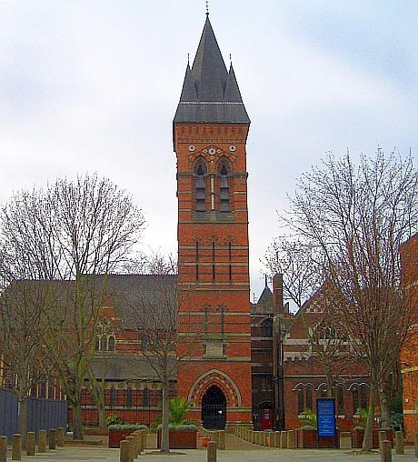

The Word-based family church. Currently meeting at St James the Less Church in Pimlico, London.
We currently meet every Sunday in a Church called St James the Less Church, in Pimlico, London.
Address:
St James the Less Church,
Thorndike Street,
Pimlico,
SW1V 2PT
How to get here:
Our nearest station is Pimlico (Victoria Line), and we’re only a three minute walk from the station. Or you can get buses 2, 36, 436, and 186 from Victoria Station.

Come and worship with us at 1:30pm every Sunday.